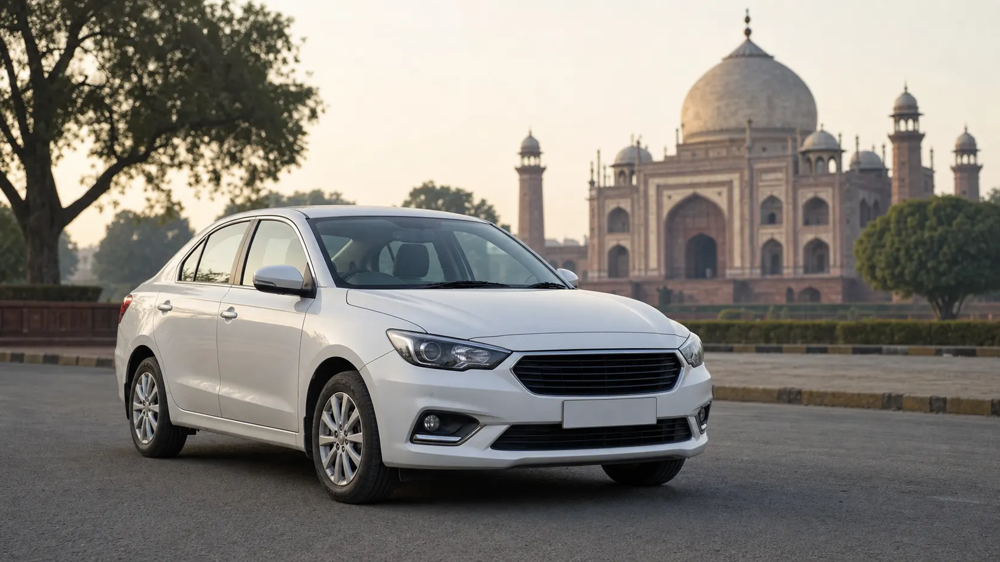
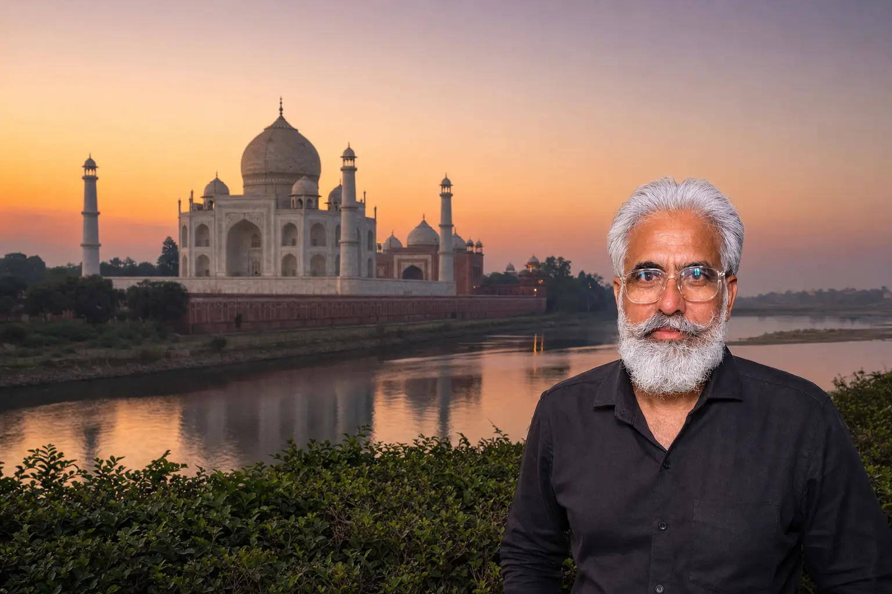

Mehandipur Balaji +
Kaila Devi Darshan
350–380 km · 12–13 hrs · Full-Day Tour — private AC cab, planned temple order, driver waiting at both temples and direct return to Agra.

Your private cab picks you up from your Agra address before dawn and covers Shri Mehandipur Balaji and Kaila Devi Mata in the right order, with the driver waiting at both temples.
No shared seats, no rushing through darshan and one fixed package fare agreed before you travel.
Trusted Agra Taxi Service For The Balaji & Kaila Devi Circuit
Private AC Cab
Planned Darshan Route
Waiting At Both Temples
Early-Morning Pickup
Family-Friendly Trip
Fare Confirmed Before Travel
One cab, one driver and one package fare from your Agra pickup point to both temples and back.
One Fixed Package Fare Confirmed on WhatsApp
4
AC Sedan — Dzire / Amaze
Up to 4 passengers
Fare on WhatsApp
6
Ertiga — AC SUV
Up to 6 passengers
Fare on WhatsApp
7
Innova Crysta — AC SUV
Up to 7 passengers
Fare on WhatsApp
Fuel • Driver charges • Full-day driver allowance • Waiting at both temples
Tolls • Rajasthan state tax • Temple parking (all at actuals)
On the two-day tour the package fare also includes the driver’s night allowance. We share the expected tolls, state tax and parking on WhatsApp before you confirm, so nothing is decided on the road.
Best for groups comfortable with an early start and a long driving day — roughly 12–13 hours door to door, covering both main temples in one trip.
Best for families wanting slower travel, groups with elderly members and a less rushed darshan, with a night halt around Karauli.
Fare For Both — Confirm on WhatsApp
Agra → Mahwa → Mehandipur Balaji → Karauli → Kaila Devi → Hindaun → Agra. We run this exact circuit regularly, so the timings are realistic.
Waiting at both temples is included within the tour day. You are not watching the clock while the queue moves.
No commission stops and no unnecessary detours added to your day — the route goes where you asked it to go.
Your driver suggests clean, family-suitable options: a highway dhaba for breakfast, lunch between Balaji and Karauli, and an evening tea stop on the return.
Picked up at your Agra hotel or home address before dawn and dropped back at the same address the same evening.
The driver’s name, mobile number and car registration number reach you on WhatsApp before an early-morning start.
One fixed package fare in writing, with tolls, Rajasthan state tax and parking estimated separately, before you commit.
With the Innova Crysta and the planned breaks, many guests travel this circuit with parents and grandparents.
Pickup from Agra around 4:30–5:00 AM.
Morning darshan; allow roughly 2.5–3 hours. Driver waits.
Continue toward Kaila Devi with a suitable meal/rest stop.
Afternoon darshan; driver waits nearby.
Madan Mohan Ji Temple can be included if timing permits.
Evening return with drop at your Agra address.
Nothing is locked in until you have the fare. Tell us your travel date, pickup time and group size on WhatsApp, ask about the two-day version or an extra temple, and we quote the full package before you commit. No app to download and no advance payment for most bookings.

Agra Taxi & Outstation Service
Local Pickup • Clear Pricing • Direct Support
Yes. The full circuit is roughly 350–380 km and takes about 12–13 hours door to door with a 4:30–5:00 AM start.
On most days we recommend Mehandipur Balaji first — you reach before the heaviest crowd. On some dates and during Navratri the order is reversed; we advise for your specific date.
About 12–13 hours. A typical day: pickup at 4:30–5:00 AM, Balaji darshan from around 7:30–8:00 AM, Kaila Devi in the early afternoon, drop in Agra by 8:30–9:30 PM.
Approximately 350–380 km round trip: Agra → Mahwa → Mehandipur Balaji → Karauli → Kaila Devi → Hindaun → Agra.
Fuel, driver charges, the driver’s full-day allowance and unlimited waiting at both temples within the tour day.
Yes — tolls, Rajasthan state tax and temple parking are paid at actuals. We share the expected amounts in writing before you confirm.
Yes. Waiting at Mehandipur Balaji and Kaila Devi is included within the tour day, so darshan is never rushed.
We recommend a 4:30–5:00 AM pickup. The early start gets you to Balaji before the heaviest crowd and still returns you to Agra the same evening.
Yes — a relaxed two-day version with a night halt in Karauli. Day 1 covers Balaji darshan and Karauli town; Day 2 is an unhurried Kaila Devi darshan and the return.
With the Innova Crysta and the planned breaks, yes — many guests travel this circuit with parents and grandparents. Kaila Devi does involve a short walk from the parking.
Yes. During Chaitra Navratri (the Kaila Devi Fair) and Sharad Navratri both temples see enormous crowds and roads near Kaila Devi are diverted — book 3–5 days ahead.
Yes. This historic Krishna temple in Karauli makes a serene 30-minute stop, usually around 4:15 PM if the day’s timing allows.
More Temple Trips From Agra
Two Temples. One Day. One Private Cab.
Send your travel date, passenger count and preferred cab type. We’ll confirm the route and package fare.